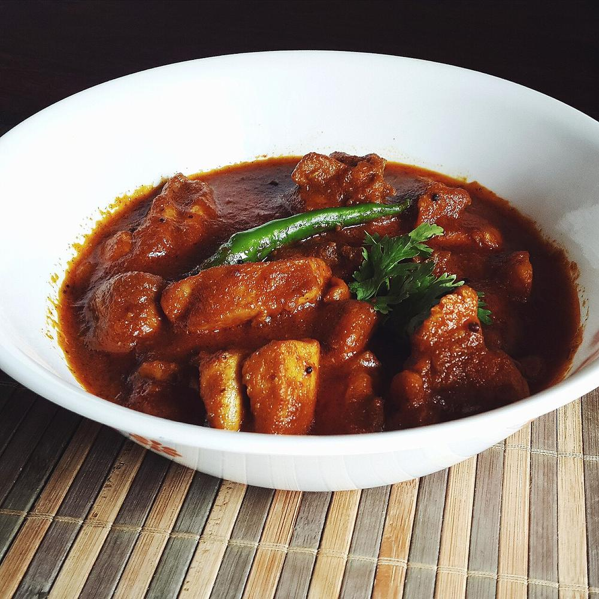

Contains: milk, mustard
Checked against the ingredient list for ten allergens: milk, egg, fish, crustaceans, tree nuts, peanuts, sesame, mustard, soy and gluten. Brands vary, so read the label on anything new to you.
Ingredients
Quantities for 4.
- 800g on the bone Chicken
- 200g, whisked Yogurt
- 1 tsp Mustard Seedsthe achari five: mustard, fennel, fenugreek, nigella and cumin
- 1.5 tsp Fennel Seeds
- 1/2 tsp Fenugreek Seeds
- 1 tsp Nigella
- 1 tsp Cumin Seeds
- 3, sliced Onion
- 1 tbsp paste Ginger
- 1 tbsp paste Garlic
- 1/2 tsp Turmeric
- 1.5 tsp Chilli Powder
- 1 tsp Amchur
- 5 tbsp Mustard Oilmustard oil, because the dish is imitating a pickle
- to taste Salt
Cookware
stovetop, kadhai
Before you start
- Achari means pickled. The five whole seeds are the panch phoran of the pickle jar, and they go in whole, not ground.
- Marinate in the refrigerator for an hour if you have it.
Method
- Marinate the chicken in the yogurt, ginger, garlic, turmeric and salt for 1 hour in the refrigerator.
- Heat the mustard oil to smoking, then cool slightly. Splutter all five whole seeds together.Smoking first takes the raw bite out of mustard oil. Then let it cool or the seeds burn.
- Add the onion and fry until deep gold.
- Add the marinated chicken and chilli powder and fry on high 10 minutes until the yogurt tightens around the meat.
- Cover and cook 20 minutes on low until done, adding a splash of water only if it catches.
- Finish with the amchur and rest 10 minutes.
Storage
Keeps 3 days refrigerated and sharpens as it sits, which suits it. Reheat gently.
Nutrition Good estimate
High protein: 47 g a serving, 38% of the calories
| Per serving364 g | Per 100 g | |
|---|---|---|
| Calories | 489 kcal | 135 kcal |
| Protein | 46.8 g | 13 g |
| Carbohydrate | 15.8 g | 4 g |
| of which sugars | 6.9 g | 2 g |
| Fibre | 3.1 g | 1 g |
| Fat | 26.4 g | 7 g |
| of which saturated | 4.8 g | 1 g |
| of which unsaturated | 18.7 g | 5 g |
Worked out from the listed quantities; most of the ingredient list could be weighed. Some ingredients have no exact match in the nutrient database and use the nearest equivalent: amchur. Estimated from raw ingredients using USDA FoodData Central. Cooking changes are not modelled, and added salt is excluded, so sodium is not given.
Written and checked against sources, not cooked in a test kitchen. Times, yields, allergens and nutrition are worked out rather than measured, so use your own judgement on doneness and on storing. More in About.